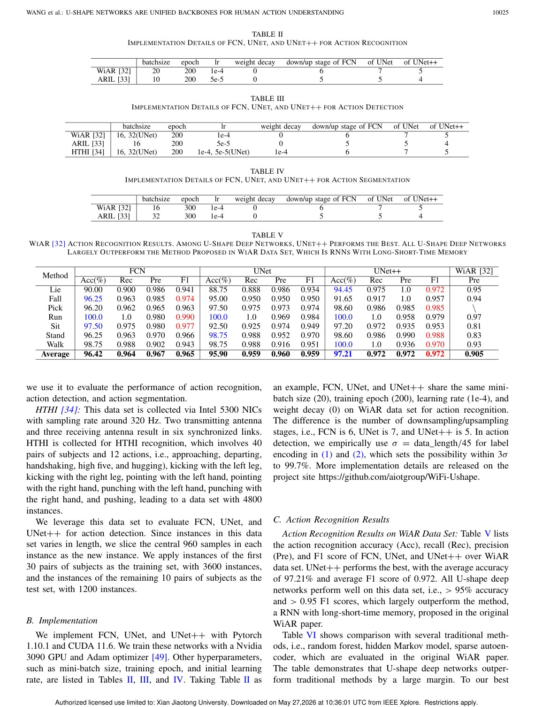
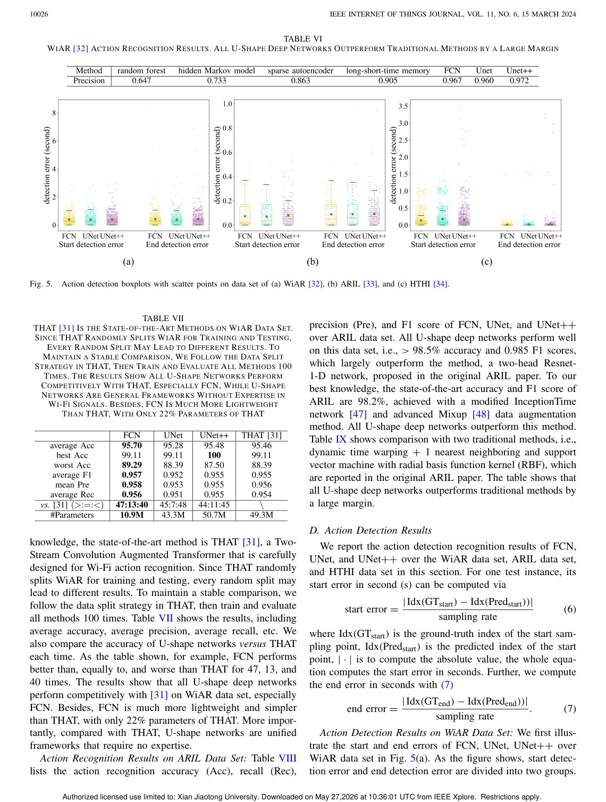

IEEE Internet of Things Journal, 2023
Publication
U-shape Deep Networks are Unified Backbones for Human Action Understanding from Wi-Fi Signals
Fei Wang, Yiao Gao, Bo Lan, Han Ding, Jingang Shi#, Jinsong Han#
This work argues that simple U-shape networks such as FCN, U-Net, and U-Net++ can serve as unified backbones for Wi-Fi action recognition, detection, and segmentation.
Wi-Fi Action Recognition
Xi'an Jiaotong University; Zhejiang University
Overview
Wi-Fi sensing papers often rely on domain-specific signal processing expertise and custom model designs. While this can improve performance, it also makes methods harder to scale, compare, and reuse. This paper asks whether a simpler backbone family can support multiple Wi-Fi human action understanding tasks.
The answer is positive: U-shape deep networks such as FCN, U-Net, and U-Net++ can act as unified backbones for action recognition, action detection, and action segmentation from Wi-Fi signals.
Motivation
Computer vision advanced partly because reusable backbone networks made model design more systematic. Wi-Fi sensing has not had the same level of architectural standardization. A unified backbone can reduce manual feature engineering and make task-specific heads easier to design.
Main Contributions
- Studies U-shape networks as general-purpose backbones for Wi-Fi human action understanding.
- Covers three task types: action recognition, action detection, and action segmentation.
- Compares FCN, U-Net, and U-Net++ on public Wi-Fi sensing datasets.
- Shows competitive or superior results compared with original papers and state-of-the-art approaches.
- Reports results above 97 percent recognition accuracy, below 0.5 s detection error, and above 90 percent segmentation accuracy in the evaluated settings.
Method Design
The networks treat Wi-Fi CSI time series as dense temporal signals. Encoder-decoder paths learn hierarchical representations, while skip connections preserve temporal resolution. This is well aligned with action detection and segmentation, where sample-level or interval-level timing matters. The paper also discusses label encoding, prediction heads, and loss functions for different tasks.
Evaluation Highlights
The evaluation uses three public datasets covering Wi-Fi activity recognition, action recognition and indoor localization, and human-to-human interaction. The results show that even without heavy signal-specific handcrafted features, U-shape networks can perform strongly across tasks.
Takeaways
The paper is important because it emphasizes reusable architecture over bespoke expertise. It suggests that Wi-Fi sensing can benefit from backbone thinking, making future systems easier to reproduce and extend.
Paper Screenshots: Method, Principle, And Results
The screenshots below are cropped from the paper PDF and are placed next to the reading notes so the page shows the actual method diagrams, principle illustrations, and result evidence rather than only prose.


Resources
{kind=link}
Citation
@inproceedings{u-shape-networks-are-unified-backbones-for-human-action-understanding-from-wi-fi-signals,
title = {U-shape Deep Networks are Unified Backbones for Human Action Understanding from Wi-Fi Signals},
author = {Fei Wang and Yiao Gao and Bo Lan and Han Ding and Jingang Shi# and Jinsong Han#},
booktitle = {IEEE Internet of Things Journal, 2023},
year = {2023}
}